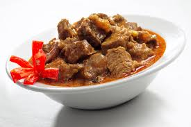

Pinoy Food Recipe

Beef Curry
Prep time
10 mins
Cook time
60 mins
Total time
1 hour 10 mins
SERVES: 6
Ingredients
2 pounds beef, cubed
2 pieces cinnamon sticks
1 piece dried bay leaf
¼ teaspoon crushed red pepper/chili
1 cup chopped onion
4 pieces cloves
1 tablespoon chopped garlic
2 medium tomatoes, sliced
1 tablespoon lemon juice
2 tablespoons ginger, minced
2 tablespoons curry powder
1 ½ cups fresh milk (or coconut milk)
½ teaspoon salt
2 tablespoons cooking oil
Directions:
Heat oil in a cooking pot.
Saute onions and garlic.
Add beef and cook until the color turns light brown.
Put-in crushed red pepper/chili, bay leaf, cloves, cinnamon sticks, and curry powder. Stir.
Pour-in fresh milk (or coconut milk). Let boil.
Add tomato, ginger, lemon juice, and salt. Stir and simmer until the sauce thickens and the beef becomes tender.
Turn the heat off and transfer to a serving plate.
Serve with steamed rice.
Share and enjoy!